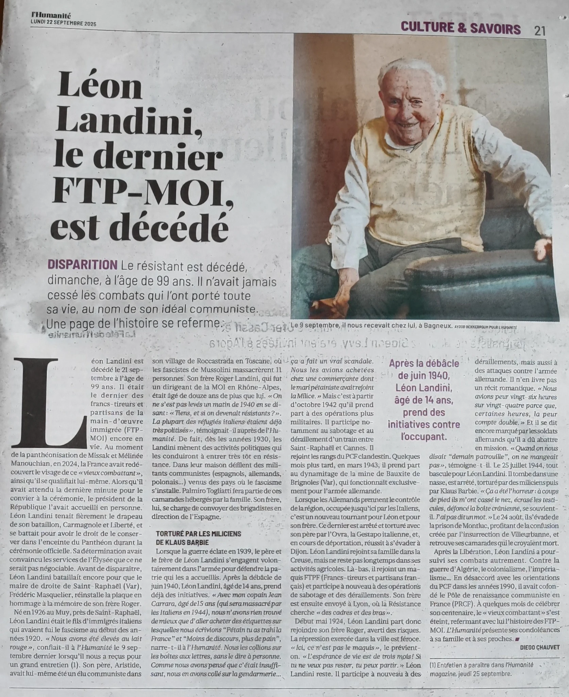

Hommage
Hommage à Léon Landini, résistant communiste des FTP-MOI
Date indiquée par Facebook · 22 septembre 2025
Repères éditoriaux
Nous avons rendu hommage à Léon Landini, résistant communiste des FTP-MOI. Sa mémoire nous rappelle le rôle des combattants immigrés et communistes dans la Résistance, auquel la Nation a rendu hommage au Panthéon.
Texte conservé avec la publication
Léon Landini, résistant communiste FTP-MOI, est mort.
Au Panthéon, la Nation avait rendu hommage à la résistance communiste, aux FTP-MOI à Manouchian et à Léon Landini l’un de ses derniers représentants les plus glorieux.

Sources
Archive rouge · export Facebook · AR-0002-FB-01005
À lire aussi · À Châteaubriant, Stéphane Peu rend hommage aux 27 fusillés